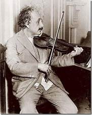

Tôi thấy ít có nhà khoa học hiện đại nào mà tinh thần quân bình như Einstein. Ông chuyên về toán và vật lí nhưng cũng biết yêu nghệ thuật như âm nhạc, văn chương, trên tôi đã nói ông phục Mozart, Bach, Schiller, Goethe, lại thường đọc các triết gia như Spinoza, Schopenhauer, Nietzsche “để biết chứ không nhất thiết theo chủ trương của họ”. Hồi nhỏ ông không ưa các môn cổ ngữ La, Hi, nhưng lớn lên ông thấy môn cổ học có lợi cho sự đào tạo tâm hồn con người. Nhờ vậy ông có một nhân sinh quan cao đẹp.
Dưới đây tôi xin giới thiệu nhân sinh quan của ông. Ông không hề thắc mắc về mục đích của đời sống; ngay từ hồi trẻ, ông đã chủ trương rằng sống thì phải phục vụ cái thiện, cái mĩ và cái chân; nếu chỉ lo kiếm tiền và hưởng lạc thì thứ lí tưởng đó ông gọi là lí tưởng của con heo.
Ông đặt cái thiện (đạo đức) lên trên cái chân (khoa học). Mặc dầu là nhà khoa học, ông nhận rằng:
“Lí trí không thể dẫn dắt ta được, chỉ có thể phục vụ ta thôi. (…) Trí năng rất tinh mắt khi tìm phương pháp và phương tiện, nhưng nó lại đui khi nhận định mục tiêu và giá trị”.
Mà mục tiêu của chúng ta là phải dựng nên được một cộng đồng gồm những người bình đẳng, tự do và sung sướng.
Vì vậy ông chiến đấu cho tự do. Quan niệm về tự do của ông sâu sắc. Theo ông, tự do cá nhân đành là cần thiết rồi, nhưng chỉ là ngoại diện; cần có tự do nội tâm nữa, nghĩa là con người cần “giữ cho tư tưởng của mình được độc lập đối với những hạn chế do thành kiến xã hội, đối với thủ tục và các thói quen”; muốn vậy mỗi người phải được đủ ăn, có thì giờ nhàn rỗi để trau dồi tri thức[36], đạo đức, và phải được dạy dỗ từ hồi nhỏ theo một tinh thần khác tinh thần trong các học đường ngày nay, nghĩa là không bị nhồi sọ mà tập suy tư một cách độc lập.

Einstein chơi violon cho một buổi hoà nhạc từ thiện
trong một giáo đường Do Thái ở Berlin vào năm 1930
Ông lại chiến đấu cho sự bình đẳng xã hội và kinh tế. Ông bảo:
“Chúng ta bao lâu nay vẫn không tìm được những giải pháp thích hợp với cuộc xung đột chính trị và các tình trạng khẩn trương kinh tế (…). Có lẽ sự tương phản về quyền lợi kinh tế giữa các cá nhân, giữa các dân tộc là nguyên nhân lớn gây ra tình trạng nguy hiểm, đáng lo ngại hiện nay trên thế giới”.
Ông cực lực chống chiến tranh, như chúng ta đã biết, và như Bertrand Russell, ông đề nghị thành lập một tổ chức siêu quốc gia, nắm quyền tối cao về kinh tế và võ bị. Bao nhiêu vũ khí nguyên tử giao cho tổ chức đó hết, như vậy mới tránh được nạn tiêu diệt nhân loại. Ông không nói rõ ra, nhưng chắc ông cũng nghĩ rằng những nguồn lợi thiên nhiên trên thế giới phải là của chung của mọi dân tộc, như vậy mới có sự bình đẳng.
Theo ông, bất kì người nào cũng phải giúp vào sự thực hiện tổ chức đó bằng cách truyền bá những tư tưởng hoà bình, nhân đạo, phải buộc các ứng viên vô quốc hội… đại diện cho mình, một khi trúng cử sẽ hoạt động cho trật tự thế giới.
Riêng các nhà bác học có nhiệm vụ quan trọng hơn: phải cảnh cáo chính quyền, chống chính quyền bằng đường lối bất hợp tác của Gandhi, mỗi khi chính quyền tỏ ra độc tài, hiếu chiến. Ông cho rằng sở dĩ các chính quyền thời nay có sức đàn áp quần chúng kinh khủng, chính là do các nhà bác học đã trực tiếp hoặc gián tiếp tạo các phương tiện đàn áp cho bọn cầm quyền.
Lời buộc tội của ông chắc làm cho rất nhiều nhà bác học xấu hổ. Người ta khen “đức độ của ông còn rực rỡ hơn thiên tài của ông” là phải. Ông chẳng những đáng làm gương cho chúng ta, mà còn đáng làm bậc thầy cho tất cả các nhà bác học trên thế giới nữa.
[36] Sách ghi: trau giồi trí thức. (Ca_kiem).